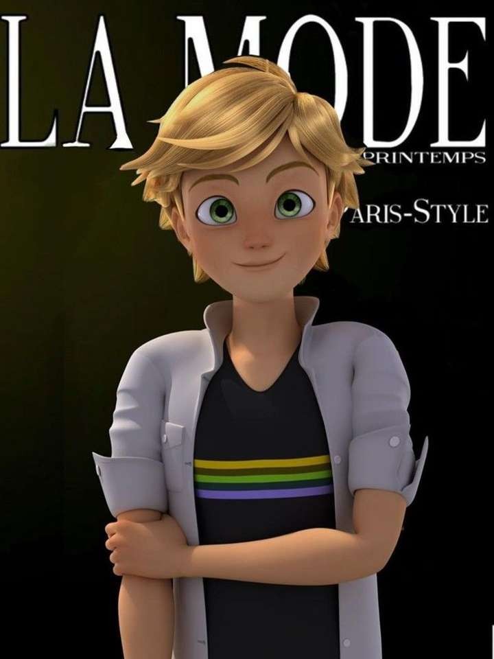

Miraculous: Biedronka i Czarny Kot
Adrien Agreste
Wiek: 14 lat
Drugi główny bohater serialu Miraculum: Biedronka i Czarny Kot. Uczęszcza do paryskiej szkoły Collège Françoise Dupont, a także zajmuje się modelingiem. Dzięki posiadanemu Miraculum w postaci pierścienia, które jest połączone z Kwami o imieniu Plagg, może przemienić się w super-bohatera – Czarnego Kota, który posiada moc niszczenia.